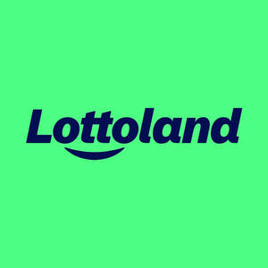

Trade Mark Journal No.2025/051 19 December 2025
UK00004272278 1 October 2025 (9,35,41,42)
Mark 1
Mark 2
Mark 3

- Class 9
- Computer software; computer software downloaded from the internet; computer software for use in relation to betting, lotteries, gaming, gambling, casinos and wagering; computer software and computer programs for distribution to, and for use by, users of lottery, gaming, gambling, casino and wagering services; computer games; computer games programmes downloaded via the internet; computer games relating to betting, lotteries, gaming, gambling, casinos and wagering; electronic interactive computer games; interactive entertainment software; downloadable application software; mobile application software; downloadable electronic publications; downloadable electronic publications provided online from databases or the Internet; downloadable electronic publications in the fields of betting, lotteries, gaming, gambling, casino and wagering; downloadable audio, visual and / or audio-visual recordings provided via the Internet; downloadable audio, visual and / or audio-visual recordings provided via the Internet in the fields of betting, lotteries, gaming, gambling, casinos and wagering; betting terminals.
- Class 35
- Advertising; data processing; provision of business information; all relating to betting services, lottery services, gaming services, gambling services, casino services, sporting and other events and wagering services; online retail and wholesale services connected with the sale of lottery tickets; promotional services; promotional advertising; comparison services relating to lotteries and gambling; information, advice and consultancy relating to all the aforesaid services.
- Class 41
- Entertainment; sporting and cultural activities; Betting services; lottery services; betting on the outcome of events, including lotteries; gaming services; gambling services; casino services; provision of information relating to sporting and other events; wagering services; education services relating to betting, lotteries, gaming, gambling, casino and wagering; providing of training; publishing; online publication of lottery results; online publication of lottery jackpots; information, advice and consultancy relating to all the aforesaid services.
- Class 42
- Design and development of computer hardware and software; computer programming; installation, maintenance and repair of computer software; computer consultancy services; design, drawing and commissioned writing for the compilation of web sites; creating, maintaining and hosting the web sites of others; design services; all relating to or concerning betting services, lottery services, gaming services, gambling services, casino services, provision of information relating to sporting and other events and wagering services; online provision of web-based applications and software; electronic data storage; information, advice and consultancy relating to all the aforesaid services.
Silene Solutions Limited
Representative: Dentons UK and Middle East LLP